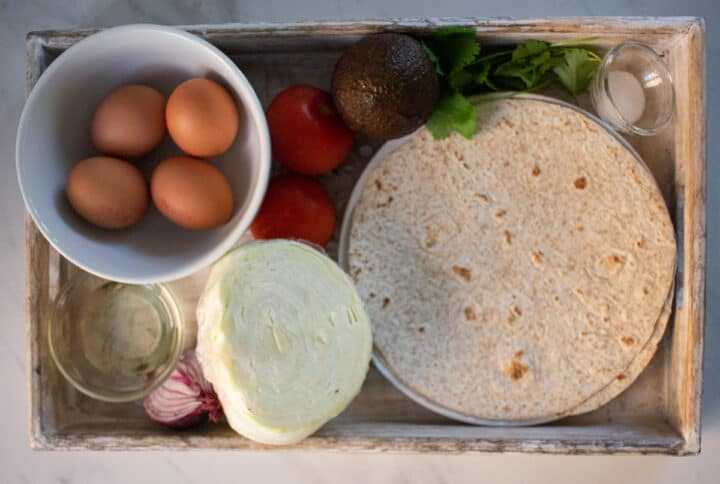
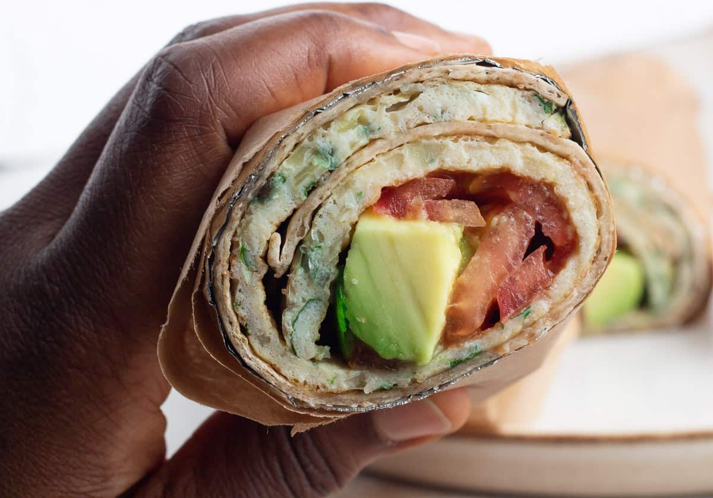

The Recipe of a Ugandan Rolex
The Ugandan Rolex is a classic street food made by rolling up a well seasoned omellette with vegies inside a warm chapati.
Simple, cheap and super satisfying. It is a favorite for students, busy workers or anyone looking for a quickbite.
Whether its breakfast, lunch or midnight snack, the Ugandan Rolex never disappoints.
Recipe Information
Prep time: 10 minutes
Cook time: 10 minutes
Servings: 1
Difficulty: Beginner
Ingredients

- Already made Chapati
- Eggs
- Onions
- Cabbage
- Salt
- Tomatoes
- Sunflower Oil
- Ovacado
- Coriander
Instructions
- Peel the onions.
- Chop the onions and cabbage very finely. You want these to be small enough to cook through quickly.
- Wash the coriander and the tomatoes. Shred/chop the coriander. Slice the tomatoes thinly.
- Warm the chapati in a non-stick pan according to pack instructions. Keep to one side.
- Break the eggs into a big bowl. Add the onions, coriander and cabbage with some salt. Whisk together and divide the mixture into two portions.
- Place a non-stick pan over medium heat. Add the 1 tablespoon oil and swirl the pan around to coat the surface.
- Pour in one portion of the egg mixture; swirl to cover the surface of the pan and reduce the heat. Check that the bottom is set by lifting the sides carefully with a flat spoon.
- Turn over gently to allow the other side to cook through, then remove from heat.
- Peel and cut the avocado into cubes.
- Place the cooked chapati on a flat plate. Place the egg on top, layer the tomatoes and avocado. Finish with some fresh coriander.
- Roll the chapati and wrap in foil or paper. Eat your Rolex while warm.

Tips
For best results, use fresh chapati for the best taste.
Best served with a Coca-Cola
Nutrition Facts
Nutrition may vary depending on oil used, chapati size and egg count. You can make it healthier by using less oil, whole wheat chapati or adding more veggies.